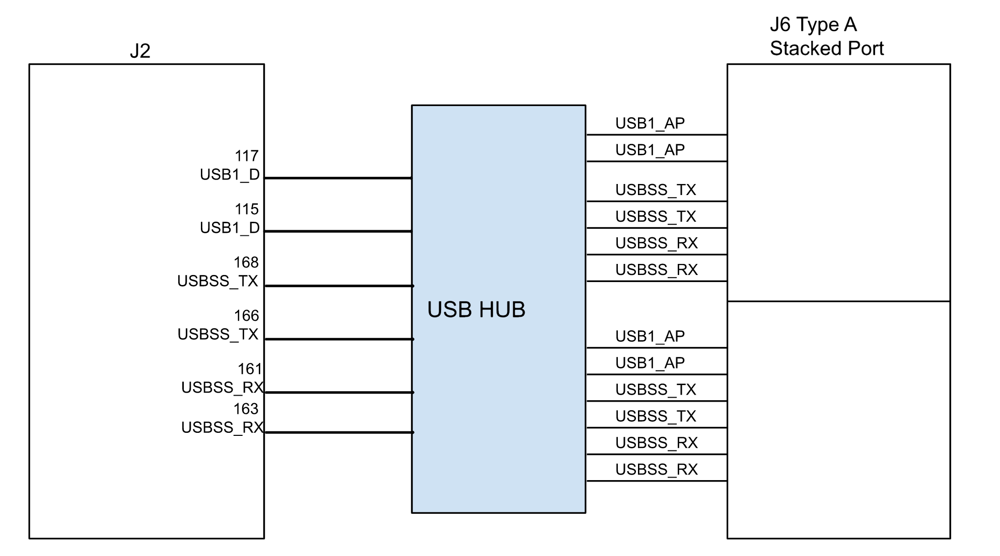

Jetson Orin NX and Nano Series#
This guide describes how to port and bring up custom platforms using the NVIDIA® Jetson™ Orin™ NX and Nano modules using the NVIDIA Jetson Linux Driver Package.
The examples in this document include code for the Jetson Orin NX and Nano modules connected to the Jetson Orin™ Nano carrier board. Refer to T234 BCT (Boot configuration Table) Deployment Guide for information about customizing the configuration files.
Board Configuration#
The Jetson Orin Nano Developer Kit consists of a P3767 System on Module (SOM) that is connected to a P3768 carrier board. Part number P3766 designates the complete Jetson Orin Nano Developer Kit. The SOM and carrier board each have an EEPROM where the board ID is saved. The Developer Kit can be used without any software configuration modifications.
Before you use the SOM with a carrier board other than the P3768, you must first change the kernel device tree, the MB1 configuration, the MB2 configuration, the ODM data, and the flashing configuration to correspond to the new carrier board. The next section provides more information about the changes.
Naming the Board#
To support a SOM with your carrier board, you must assign the module/carrier board combination with a lowercase alphanumeric name. The name can include hyphens (-) and underscores (_) but not spaces. Some examples of valid names are:
p3768-0000-devkitdevboard
The name you select appears in:
Filenames and pathnames
User-visible device tree filenames
This name is also exposed to the user through various Linux kernel proc files.
Note
In this section, <board> represents your board name.
You must also select a similarly constructed vendor name, and the same character set rules apply. Here is an example:
nvidia
In this section, <vendor> represents your vendor name.
Placeholders in the Porting Instructions#
Placeholders are used throughout this topic, and when executing commands, substitute an appropriate value for each placeholder.
<function>is a functional module name, which might be power-tree, pinmux, sdmmc-drv, keys, comm (Wi-Fi/Bluetooth®), camera, and so on.<board>is the name you selected to represent your platform.For example, p3678 is the name of the carrier board from the Jetson Orin Nano Developer Kit. The NVIDIA <board> names use lower case letters.
<version>is a board version number, such as a00.Files for NVIDIA reference boards include a version number, and files for customer platforms are not required to include a version number.
<vendor>is the name of your organization or the name of the vendor for your board.
Root Filesystem Configuration#
Jetson Linux can use any standard or customized Linux root filesystem (rootfs) that is appropriate for its targeted embedded applications. However, some settings must be configured in the rootfs’s boot-up framework to set the default configuration after the boot or some of the core functionalities will not run as expected.
For example:
The
nv.shandnvfb.shboot-up scripts complete some platform-specific configurations in the kernel.The Xorg and X libraries must be correctly configured for the target device.
The nvpmodel clock and frequency must be configured for the target device.
In this driver package, these rootfs configurations and customizations are provided in the Linux_for_Tegra/nv_tegra/ directory and its subdirectories.
You must incorporate the relevant customization for your target rootfs from this location.
Note
For the sample Ubuntu root filesystem provided by NVIDIA, this customization is applied using the Linux_for_Tegra/apply_binaries.sh script.
MB1 Configuration Changes#
Starting in version T234, multiple .dts/dtsi files define the boot time configuration of the hardware, and these files are applied by Bootloader. The MB1 boot configuration tables are available at <l4t_top>/bootloader/generic/BCT
Refer to T23x Boot Configuration Table for more information about configuring BCT.
Generating the Pinmux dtsi Files#
To define your board’s pinmux configuration, download the Jetson Orin NX Series and Jetson Orin Nano Series Pinmux table from the Jetson Download Center. The table is a spreadsheet that provides the following information:
The locations and default pinmux settings.
The pinmux settings definitions in the source code or device tree.
To access the spreadsheet:
Search for pinmux and download the spreadsheet for Orin NX and Nano Series.
Before you open the spreadsheet, ensure that macros are enabled.
Ensure the Pin Direction column is consistent with the selected peripheral function.
For example, I2C pins (clock and data) are both bidirectional signals.
The Req Initial State should be consistent with the direction.
For example, the Drive 1 and Drive 0 options are applicable only to the output and bidirectional modes.
The 3.3V Tolerance option is available only for certain pins.
When you enable this option, that pin will function as open-drain.
Customize the spreadsheet to configure your board and click Generate DT File to generate the following files:
Note
The names of the generated files depend on the input you provided during Generate DT File.
pinmux.dtsi
gpio.dtsi
padvoltage.dtsi
Note
Copy the padvoltage.dtsi and pinmux.dtsi files to the
<l4t_top>/bootloader/generic/BCT/directory and copy thegpio.dtsifile to the<l4t_top>/bootloader/directory.
After copying the files, ensure that you point these files to the new board.conf file that you created for your board. Refer to Flashing the Build Image for more information.
Changing the Pinmux#
Starting with JetPack 6, you can change the pinmux in the following ways:
Update the MB1 pinmux BCT as mentioned in Generating the Pinmux dtsi Files.
For debugging, you can dynamically change the pinmux.
To dynamically change the pinmux:
Get the pinmux register address.
In TRM, click System Components → Multi-Purpose I/O Pins and Pin Multiplexing (PinMux) → Pinmux Registers.
Search for the pin name (for example, SOC_GPIO37).
Write down the complete pin name.
For example, PADCTL_G3_SOC_GPIO37_0 and the Offset (for example, SOC_GPIO37: Offset = 0x80).
Go to the Jetson Orin Technical Reference Manual at https://developer.nvidia.com/orin-series-soc-technical-reference-manual, and in Table 1-15: Pad Control Grouping, find the G3 pad control block = PADCTL_A0 entry.
On the Memory Architecture page, click Memory Mapped I/O → Address Map.
Search for PADCTL_A0.
The base address is PADCTL_A0 = 0x02430000, and the pinmux register address is PADCTL base address + offset.
For example, SOC_GPIO37 Pinmux register address = 0x02430000 + 0x80 = 0x02430080.
Get the current register value in the device using the devmem tool.
Install devmem.
$ sudo apt-get install busybox $ busybox devmem <32-bit address>
For example, busybox devmem 0x02430080.
To use the pin as GPIO, update the following fields in the PADCTL register:
Find the register information from the Pinmux Registers section in TRM as mentioned in step 2.
Set GPIO to Bit 10 = 0.
For the output, set Bit 4 = 0 ; Bit 6 = 0.
For Input, set Bit 4 = 1 ; Bit 6 = 1.
Use the devmem tool to set the register, for example, busybox devmem 0x02430080 w 0x050.
Verify that the register value is set accordingly.
An Example
To update Pin MCLK05: SOC_GPIO33: PQ6:
Adjust the pinmux to map the pin to GPIO.
Configure the GPIO controller (input, output high, or output low).
To configure the pinmux for this pin:
The Pinmux register base address is 0x2430000.
The Offset is 0x70.
The Pinmux register address is 0x2430070.
Run the following command.
$ busybox devmem 0x02430070The output value is 0x00000054.
To set the pin as the output, run the following command.
$ busybox devmem 0x02430070 w 0x004To confirm, check the output.
$ busybox devmem 0x02430070
Starting with JetPack 6, the GPIO sysfs has been deprecated.
To set the direction of the GPIO controller between the input and the output, users can use upstream GPIO tools instead of GPIO sysfs.
Identifying the GPIO Number#
If you designed your own carrier board, to translate from the SOM connector pins to actual GPIO numbers, you must understand the following GPIO mapping formula. The translated GPIO numbers can be controlled by the driver.
The Jetson module dynamically registers GPIOs, so search the kernel messages to check the GPIO allocation ranges for each GPIO group. The command and resulting output are similar to the following output:
root@jetson:/home/ubuntu# dmesg | grep gpiochip
[ 5.726492] gpiochip0: registered GPIOs 348 to 511 on tegra234-gpio
[ 5.732478] gpiochip1: registered GPIOs 316 to 347 on tegra234-gpio-aon
root@jetson:/home/ubuntu#
In the output, there are two Jetson GPIO ports with different base indices:
tegra234-gpio, at base index 348
tegra234-gpio-aon, at base index 316
You can check the GPIO number in one of the following ways:
Using a calculation.
Before you get started, determine how you plan to configure the offset at each available port.
Here is the list of the tegra234 GPIO ports and offset mapping:
Port
Number of Pins
Port Offset
PORT_A
8
0
PORT_B
1
8
PORT_C
8
9
PORT_D
4
17
PORT_E
8
21
PORT_F
6
29
PORT_G
8
35
PORT_H
8
43
PORT_I
7
51
PORT_J
6
58
PORT_K
8
64
PORT_L
4
72
PORT_M
8
76
PORT_N
8
84
PORT_P
8
92
PORT_Q
8
100
PORT_R
6
108
PORT_X
8
114
PORT_Y
8
122
PORT_Z
8
130
PORT_AC
8
138
PORT_AD
4
146
PORT_AE
2
150
PORT_AF
4
152
PORT_AG
8
156
PORT_AA
8
0
PORT_BB
4
8
PORT_CC
8
12
PORT_DD
3
20
PORT_EE
8
23
PORT_GG
1
31
Search for the pin details from the Jetson Orin NX Series and Jetson Orin Nano Series Pinmux table (refer to Generating the Pinmux dtsi Files).
For example SOC_GPIO08 is GPIO3_PB.00.
Identify the port as B and the Pin_offset as 0.
Calculate the pin number with the following formula:
base + port_offset + pin_offsetVerify the following values:
The base is 348.
This value comes from the kernel boot log, it is already noted
tegra234-gpio, at base index 348.port_offsetof port B = 8This value comes from the tegra234 GPIO port and the offset mapping above.
pin_offset = 0
Pin number = 348 + 8 + 0 = 356
Using Kernel debugfs.
Search for the GPIO pin in the Jetson Orin NX Series and Jetson Orin Nano Series Pinmux table (refer to Generating the Pinmux dtsi Files).
For example, SOC_GPIO08, which is GPIO3_PB.00.
Follow the gpio debugfs look up that use the port and offset.
cat /sys/kernel/debug/gpio | grep PB.00The GPIO number is mentioned in the first column as gpio-356.
root@jetson:/home/ubuntu# cat /sys/kernel/debug/gpio | grep PB.00gpio-356 (PB.00
Note
To use a pin as the GPIO, ensure that the E_IO_HV field is disabled in the corresponding pinmux register of the GPIO pin. You can disable the 3.3V Tolerance Enable field in the pinmux spreadsheet.
Also, make sure Pin Direction is set to Bidirectional so that the userspace framework can operate GPIO in both input and output direction. After these configurations, reflash the board with the updated pinmux file.
Configuring the pinmux Setting of I2C and DP1_AUX#
Use the following configuration in the device tree to configure pinmux between I2C and DP1_AUX, as they cannot be configured using the pinmux spreadsheet.
miscreg-dpaux@00100000 {
compatible = "nvidia,tegra194-misc-dpaux-padctl";
reg = <0x0 0x00100000 0x0 0xf000>;
dpaux_default: pinmux@0 {
dpaux0_pins {
pins = "dpaux-0";
function = "i2c";
};
};
};
i2c@31b0000 {
pinctrl-names = "default";
pinctrl-0 = <&dpaux_default>;
};
Changing the GPIO Pins#
If the pin meets the following conditions, users can dynamically change the pin settings by using the GPIO tools:
The pin is part of the 40-pin header.
To confirm whether the pin is one of the 40-pin headers, check the Jetson Orin NX Series and Jetson Orin Nano Series Pinmux spreadsheet.
The pin is not configured as an SFIO pin by the MB1 BCT.
The pin is configured to be bidirectional by the MB1 BCT.
EEPROM Modifications#
EEPROM is an optional component for a customized carrier board. If the carrier board is designed without an EEPROM, the following modifications will be needed on the MB2 BCT file:
Linux_for_Tegra/bootloader/generic/BCT/tegra234-mb2-bct-misc-p3767-0000.dts
- cvb_eeprom_read_size = <0x100>
+ cvb_eeprom_read_size = <0x0>
Porting the Linux Kernel Device Tree#
Overview of T23x Device Tree Structure#
Refer to Kernel Customization for more information about downloading and building the device tree files.
After you complete the steps from the link above, the device tree files will be in the following location:
Linux_for_Tegra/source/hardware/nvidia/t23x/nv-public
The device tree is structured as two distinct layers:
The bottom layer comes from the upstream Linux kernel, which keeps the NVIDIA sources aligned with the upstream.
These files are in the root of the
nv-publicfolder (for example, seenv-public/tegra234-p3768-0000+p3767-0005.dts).The top layer comes from the nv-platform directory.
The main dts file for each platform is named to coincide with the upstream dts file. However, instead of
<board>.dtsit is<board>-nv.dts. For example, thenv-public/nv-platform/tegra234-p3768-0000+p3767-0005-nv.dtsfile includes the upstream dts file and also adds content and updates.
There are variations of each dtb file for each supported module SKU. The Orin Nano Developer Kit can be used with P3767 modules SKU 0, 1, 3, 4, 5. Correspondingly these are the top-level dtb files:
tegra234-p3768-0000+p3767-0000-nv.dtb
tegra234-p3768-0000+p3767-0001-nv.dtb
tegra234-p3768-0000+p3767-0003-nv.dtb
tegra234-p3768-0000+p3767-0004-nv.dtb
tegra234-p3768-0000+p3767-0005-nv.dtb
Each of these files has a corresponding dts file in the nv-platform directory.
Updating DTB Files#
After creating or modifying a dtb file, copy the file to the
Linux_for_Tegra/kernel/dtb directory where it will get picked up by
the flash.sh script as determined by the DTB_FILE variable in the
associated flash configuration file.
By default, UEFI is configured for extlinux boot, so it looks
for an FDT entry in the /boot/extlinux/extlinux.conf file. If an entry
is found, and the file exists, the UEFI uses that file from the rootfs when
loading the kernel dtb file. If it is not specified, or not found, the UEFI
falls back to using its own dtb file to load the kernel dtb.
Note
Use fdtdump to verify whether your changes have taken effect as expected.
For example, to help you quickly search the output (vim-style search), fdtdump can be used with less.
fdtdump tegra234-p3768-0000+p3767-0005-nv.dtb | less
Device Tree Overlays#
Overlay files that are part of the OVERLAY_DTB_FILE variable in the flash
configuration will be flashed into the UEFI partition (A/B-cpu_bootloader).
These overlays are applied for both UEFI and kernel. Optionally, the
extlinux.conf file can be used to specify additional overlay files using the
OVERLAYS keyword, but the overlays specified in extlinux.conf are applied only
to the kernel dtb.
Configuring the PCIe Controller#
The PCIe host controller is based on the Synopsys Designware PCIe intellectual property, so the host inherits the common properties that are defined in the information file at:
$(KERNEL_TOP)/Documentation/devicetree/bindings/pci/nvidia,tegra194-pcie.txt
This file covers topics that include configuring maximum link speed, link width, and the advertisement of different ASPM states.
PCIe Controller Features#
Jetson Orin NX/Nano series has the following PCIe controllers with these specifications:
Speed:
Jetson Orin NX supports up to Gen4 speed
Jetson Orin Nano supports up to Gen3 speed.
Lane width:
C4: up to x4
C7: up to x2 (1 lane multiplexed with C9)
C9: x1
C1: x1
Controllers:
Controller C4 supports dual mode (root port or endpoint)
C1, C7, and C9 support root port only
ASPM: All controllers support ASPM.
Enabling PCIe in a Customer Carrier Board Design#
Select the appropriate UPHY configuration that suits the carrier board design and update ODMDATA accordingly (refer to Configuring the UPHY Lane for more information).
Enable the appropriate PCIe node from the table below.
Ensure that the controller Pins CLK and RST are configured correctly in MB1 Pinmux and gpio dtsi (refer to Generating the Pinmux dtsi Files for more information).
Add the pipe2uphy phandle entries as a phy property in the PCIe controller DT node.
pipe2uphy DT nodes are defined in SoC DT at $(TOP)/hardware/nvidia/soc/t234/kernel-dts/tegra234-soc/tegra234-soc-pcie.dtsi.
Each pipe2uphy node is a 1:1 map to the UPHY lanes that are defined in Configuring the UPHY Lane.
Here are the PCIe controller DT modes:
PCIe Controller and Mode |
PCIe Controller DT Mode |
|---|---|
PCIe C1 RP |
|
PCIe C4 RP |
|
PCIe C4 EP |
|
PCIe C7 RP |
|
PCIe C9 RP |
Porting Universal Serial Bus#
Jetson Orin NX/Nano can support up to three enhanced SuperSpeed Universal Serial Bus (USB) ports. In some implementations, not all of these ports can be used because of UPHY lane sharing among PCIE, UFS, and XUSB. If you designed your carrier board, verify the Universal physical layer (UPHY) lane mapping and compatibility between P3767 and your custom board by consulting the NVIDIA team.
USB Structure#
An enhanced SuperSpeed USB port has nine pins:
VBUS.
GND.
D+.
D−.
Two differential signal pairs for SuperSpeed data transfer.
One ground (
GND_DRAIN) for drain wire termination and managing EMI, RFI, and signal integrity.
The D+/D− signal pins connect to UTMI pads. The SSTX/SSRX signal pins
connect to UPHY and are handled by one UPHY lane. As UPHY lanes are
shared between PPCIE, UFS, and XUSB, the UPHY lanes must be assigned
based on the custom carrier board’s requirements.
USB SerDes Lane Assignment#
The SerDes lanes for USB SuperSpeed are part of the UPHY block. The Jetson P3767 SOM USB ports have the following UPHY lanes:
Jetson SODIMM Signal Name |
Orin UPHY Block and Lane |
Jetson Orin NX/Nano Function |
|---|---|---|
USBSS0_RX/TX |
UPHY0, Lane 0 |
USB 3.2 (P0) |
DP0_TXD0/1 |
UPHY0, Lane 1 |
USB 3.2 (P1) |
DP0_TXD2/3 |
UPHY0, Lane 2 |
USB 3.2 (P2) |
Refer to UPHY Lane Configuration for a list of the supported PCIe configurations.
Before you design your custom board, refer to the NVIDIA Jetson Orin Series SOC Technical Reference Manual (TRM), the NVIDIA Jetson Orin NX Series and Orin Nano Product Design Guide (DG), and then contact NVIDIA.
Required Device Tree Changes#
This section gives step-by-step guidance for checking schematics and configuring USB ports in the device tree. The examples are based on the P3767 SOM and P3678 carrier board.
For a Host-Only Port#
This section takes a J6 type A stacked connector as an example of a host-only port. The USB signals (USB2.0 and USB3.2) for the J6 are coming from the Port 0 USBSS lines of the SOM through USB HUB as shown in the following image.
{kind=link}

The xusb_padctl Node#
The device tree’s xusb_padctl node follows the conventions of
pinctrl-bindings.txt. It contains two groups, named pads and ports,
which describe USB2 and USB3 signals along with parameters and port
numbers. The name of each parameter description subnode in pads and
ports must be in the form <type>-<port_number>, where <type> is "usb2"
or "usb3", and <port_number> is the associated port number.
The pads Subnode#
nvidia,function: A string containing the name of the function to mux to the pin or group. Must bexusb.
The ports Subnode#
mode: A string that describes USB port capability.A port for USB2 must have this property. It must be one of these values:
hostperipheralOTG
nvidia,usb2-companion: USB2 port (0, 1, or 2) to which the port is mapped.A port for USB3 must have this property.
nvidia,oc-pin: The overcurrentVBUSpin the port is using.The value must be positive or zero.
Note
Some Type-C port controllers, such as from Cypress can handle the overcurrent detection and handling. Therefore, you do not need to set this property for USB type C connectors that have Type-C port controllers.
vbus-supply:VBUSregulator for the corresponding UTMI pad.Set to
&vdd_5v0_sysfor a dummy regulator.Refer to https://git.kernel.org/pub/scm/linux/kernel/git/torvalds/linux.git/tree/Documentation/devicetree/bindings/phy/nvidia,tegra194-xusb-padctl.yaml for more information about
xusb_padctl.
Example: USB Port Enablement for xusb_padctl
Take J6 (Type-A stacked port), for example, and create a pad/port node and property list:
xusb_padctl: padctl@3520000 {
...
pads {
usb2 {
lanes {
...
usb2-1 {
nvidia,function = "xusb";
status = "okay";
};
...
};
};
usb3 {
lanes {
...
usb3-0 {
nvidia,function = "xusb";
status = "okay";
};
...
};
};
};
ports {
...
usb2-1 {
mode = "host";
status = "okay";
};
...
usb3-0 {
nvidia,usb2-companion = <1>;
status = "okay";
};
...
};
};
Under the xHCI Node#
The Jetson Orin xHCI controller complies with xHCI specifications, which supports the USB 2.0 HighSpeed/FullSpeed/LowSpeed and USB 3.2 SuperSpeed protocols.
phys: Must contain an entry for each entry inphy-names.phy-names: Must include an entry for each PHY used by the controller.Names must be in the form
<type>-<port_number>, where<type>is"usb2"or"usb3", and<port_number>is the associated port number.nvidia,xusb-padctl: A pointer to thexusb-padctlnode.
Refer to https://git.kernel.org/pub/scm/linux/kernel/git/torvalds/linux.git/tree/Documentation/devicetree/bindings/usb/nvidia,tegra234-xusb.yaml for more information about xHCI.
Example: USB Port Enablement or tegra_xhci
This example contains a J6 example and creates an xHCI node and property list:
usb@3610000 { ... phys = <&{/bus@0/padctl@3520000/pads/usb2/lanes/usb2-1}>, <&{/bus@0/padctl@3520000/pads/usb3/lanes/usb3-2}>; phy-names = "usb2-1", "usb3-2"; nvidia,xusb-padctl = <&xusb_padctl>; status = "okay"; ... };
For an On-The-Go Port#
For an example OTG implementation, refer to For an On-The-GO Port. The Orin Nano Developer Kit implementation is similar, but it uses the fusb301 controller instead of the ucsi_ccg controller.
Removing Type-C Connectors and FUSB301 Driver from the Device Tree
In some custom carrier boards, Type-C connectors may not be present. In such cases, adjustments to the device tree are necessary to reflect the absence of these components. The following steps outline the process of removing Type-C connectors and the FUSB301 driver:
Remove the fusb301 Type-C Controller from
i2c@c240000.If the ONSEMI FUSB301 Type-C Controller is not required, it should be removed from the corresponding entry in the device tree under
i2c@c240000.Remove the USB Port Endpoint.
The entry for the
usb2-0/portunderpadctl@3520000/portsshould be removed. This is necessary because the associated remote-endpoint is no longer required after the removal of the connector.Add the
role-switch-default-modeproperty for USB Ports (optional).The
role-switch-default-modeproperty is optional and may be used for USB OTG and peripheral ports to explicitly define the default USB role when no Type-C connector is present.
diff --git a/nv-platform/tegra234-p3768-0000+p3767-xxxx-nv-common.dtsi b/nv-platform/tegra234-p3768-0000+p3767-xxxx-nv-common.dtsi
index 4ac4ff0629fb..00f90ffffd2c 100644
--- a/nv-platform/tegra234-p3768-0000+p3767-xxxx-nv-common.dtsi
+++ b/nv-platform/tegra234-p3768-0000+p3767-xxxx-nv-common.dtsi
@@ -162,36 +162,8 @@
};
};
- padctl@3520000 {
- ports {
- usb2-0 {
- port {
- typec_p0: endpoint {
- remote-endpoint = <&fusb_p0>;
- };
- };
- };
- };
- };
-
i2c@c240000 {
status = "okay";
- fusb301@25 {
- compatible = "onsemi,fusb301";
- reg = <0x25>;
- status = "okay";
- #address-cells = <1>;
- #size-cells = <0>;
- interrupt-parent = <&gpio>;
- interrupts = <TEGRA234_MAIN_GPIO(Z, 1) IRQ_TYPE_LEVEL_LOW>;
- connector@0 {
- port@0 {
- fusb_p0: endpoint {
- remote-endpoint = <&typec_p0>;
- };
- };
- };
- };
};
/* PWM1, 40pin header, pin 15 */
diff --git a/tegra234-p3768-0000+p3767.dtsi b/tegra234-p3768-0000+p3767.dtsi
index 19340d13f789..9d935400baa0 100644
--- a/tegra234-p3768-0000+p3767.dtsi
+++ b/tegra234-p3768-0000+p3767.dtsi
@@ -102,6 +102,7 @@
vbus-supply = <&vdd_5v0_sys>;
status = "okay";
usb-role-switch;
+ role-switch-default-mode = "peripheral";
};
/* hub */
UPHY Lane Configuration#
The Jetson Orin NX/Nano SOM supports the following UPHY configurations:
UPHY0 (HSIO) Configuration Options
Lane
hsio-uphy-config-0
hsio-uphy-config-40
hsio-uphy-config-41
0
USB 3.2 (P0)
USB 3.2 (P0)
USB 3.2 (P0)
1
USB 3.2 (P1)
USB 3.2 (P1)
USB 3.2 (P1)
2
USB 3.2 (P2)
USB 3.2 (P2)
Unused
3
PCIe x1 (C1), RP
PCIe x1 (C1), RP (Gen2)
PCIe x1 (C1), RP
4
PCIe x4 (C4), RP
PCIe x4 (C4), EP
PCIe x4 (C4), EP
5
6
7
When selecting hsio-uphy-config-40, PCIe C1 RP will be restricted to Gen2 speeds.
UPHY2 (GBE) Configuration Options
Lane
gbe-uphy-config-8
gbe-uphy-config-9
0
PCIe x2 (C7), RP
PCIe x1 (C7), RP
1
PCIe x1 (C9), RP
UPHY0/1/2 are called HSIO, NVHS, and GBE respectively. The Orin NX/Nano SOM does not use NVHS, and it is powered down.
The UPHY configuration is specified using the ODMDATA variable in the flash configuration file. The out-of-box configuration as defined in p3767.conf.common looks like this:
ODMDATA="gbe-uphy-config-8,hsstp-lane-map-3,hsio-uphy-config-0";
The GBE configuration and HSIO configuration are independent. For example, to use PCIe C7 and C9 as independent 1-lane controllers, select the gbe-uphy-config-9 configuration by adding a line like the following to your flash configuration file:
ODMDATA="gbe-uphy-config-9,hsstp-lane-map-3,hsio-uphy-config-0";
Do not edit this variable directly in the p3767.conf.common file. You should instead append that variable in your flash configuration file to override the default. To use PCIE C4 as an endpoint, use configuration hsio-uphy-config-40 or hsio-uphy-config-41 above. Refer to PCIE Endpoint Mode for more information.
ODM Data for T234#
The following table provides information about the ODM data for T234.
31:26 |
25:23 |
22:18 |
17 |
16 |
15 |
14 |
13:0 |
|---|---|---|---|---|---|---|---|
HSIO UPHY Config |
NVHS UPHY Config |
GBE UPHY Config |
GBE3 Mode |
GBE2 Mode |
GBE1 Mode |
GBE0 Mode |
Reserved |
Config Number in HSIO UPHY Lane Mapping Options |
Config Number in NVHS UPHY Lane Mapping Options |
Config Number in GBE UPHY Lane Mapping Options |
0:5G, 1:10G |
0:5G, 1:10G |
0:5G, 1:10G |
0:5G, 1:10G |
TBD |
BPMP-FW DTB /uphy/hsio-uphy-config |
BPMP-FW DTB /uphy/nvhs-uphy-config |
BPMP-FW DTB /uphy/gbe-uphy-config |
BPMP-FW DTB /uphy/gbe3-enable-10g |
BPMP-FW DTB /uphy/gbe2-enable-10g |
BPMP-FW DTB /uphy/gbe1-enable-10g |
BPMP-FW DTB /uphy/gbe0-enable-10g |
TBD |
HSIO UPHY Lane Mapping Options#
Config Number |
PLL0 |
Lane 0 |
Lane 1 |
PLL1 |
Lane 2 |
Lane 3 |
PLL2 |
Lane 4 |
Lane 5 |
Lane 6 |
Lane 7 |
PLL3 |
|---|---|---|---|---|---|---|---|---|---|---|---|---|
0 |
Disabled |
USB3.1 P0 |
USB3.1 P1 |
USB3/PCIE G2 |
USB3.1 P2 |
PCIE x1 C1 |
PCIE G4 |
PCIE x4 C4 |
PCIE x4 C4 |
PCIE x4 C4 |
PCIE x4 C4 |
USB3/PCIE G2 |
GBE UPHY Lane Mapping Options#
Config Number |
PLL0 |
Lane 0 |
Lane 1 |
Lane 2 |
Lane 3 |
PLL1 |
Lane 4 |
Lane 5 |
Lane 6 |
Lane 7 |
PLL2 |
|---|---|---|---|---|---|---|---|---|---|---|---|
8 |
USB3/PCIE G2 |
PCIE x2 C7 |
PCIE x2 C7 |
PCIE x2 C8 |
PCIE x2 C8 |
PCIE G4 |
PCIE x2 C10 |
PCIE x2 C10 |
PCIE x2 C9 |
PCIE x2 C9 |
USB3/PCIE G2 |
9 |
USB3/PCIE G2 |
PCIE x1 C7 |
PCIE x1 C9 |
PCIE x2 C8 |
PCIE x2 C8 |
PCIE G4 |
PCIE x4 C10 |
PCIE x4 C10 |
PCIE x4 C10 |
PCIE x4 C10 |
PCIE C10 Only |
Flashing the Build Image#
When flashing the build image, use your specific board name. The flashing script uses the configuration in the <board>.conf file during the flashing process.
Here is an example of a flash configuration script:
source "${LDK_DIR}/p3767.conf.common";
PINMUX_CONFIG="tegra234-mb1-bct-pinmux-p3767-dp-a03.dtsi";
PMC_CONFIG="tegra234-mb1-bct-padvoltage-p3767-dp-a03.dtsi";
BPFDTB_FILE="tegra234-bpmp-3767-0000-a02-3509-a02.dtb";
DTB_FILE="tegra234-p3767-0000-p3768-0000-a0.dtb";
TBCDTB_FILE="${DTB_FILE}";
EMMC_CFG="flash_t234_qspi_sd.xml";
Note
To be reflected in the flashed image, the parameters must be specified after sourcing the <xxx>.conf.common file .
For example, you can flash to NVMe like this:
$ sudo ./tools/kernel_flash/l4t_initrd_flash.sh --external-device nvme0n1p1 \
-c tools/kernel_flash//flash_l4t_t234_nvme.xml -p "-c bootloader/generic/cfg/flash_t234_qspi.xml" \
--showlogs --network usb0 <board> internal
For more flashing support and options, refer to Flashing Support.
Note
UEFI picks the kernel image and dtb from the rootfs path that is mentioned in /boot/extlinux/extlinux.conf file. If you mentioned an image and dtb in this file, these items will be given precedence. For example, you might want to scp the file to the Jetson target path in the file. If this information is not mentioned, or the file is not present, the Kernel Image or dtb will be selected from the flashed partition in the storage device.
Setting Optional Environmental Variables#
The flash.sh script updates the following environment variables based on board EEPROM and other parameters that were passed. To provide specific values to these variables, define them in the board-specific file board.conf file to override the default values.
# Optional Environment Variables:
# BCTFILE ---------------- Boot control table configuration file to be used.
# BOARDID ---------------- Pass boardid to override EEPROM value
# BOARDREV --------------- Pass board_revision to override EEPROM value
# BOARDSKU --------------- Pass board_sku to override EEPROM value
# BOOTLOADER ------------- Bootloader binary to be flashed
# BOOTPARTLIMIT ---------- GPT data limit. (== Max BCT size + PPT size)
# BOOTPARTSIZE ----------- Total eMMC HW boot partition size.
# CFGFILE ---------------- Partition table configuration file to be used.
# CMDLINE ---------------- Target cmdline. See help for more information.
# DEVSECTSIZE ------------ Device Sector size. (default = 512Byte).
# DTBFILE ---------------- Device Tree file to be used.
# EMMCSIZE --------------- Size of target device eMMC (boot0+boot1+user).
# FLASHAPP --------------- Flash application running in host machine.
# FLASHER ---------------- Flash server running in target machine.
# INITRD ----------------- Initrd image file to be flashed.
# KERNEL_IMAGE ----------- Linux kernel zImage file to be flashed.
# MTS -------------------- MTS file name such as mts_si.
# MTSPREBOOT ------------- MTS preboot file name such as mts_preboot_si.
# NFSARGS ---------------- Static Network assignments.
# <C-ipa>:<S-ipa>:<G-ipa>:<netmask>
# NFSROOT ---------------- NFSROOT i.e. <my IP addr>:/exported/rootfs_dir.
# ODMDATA ---------------- Odmdata to be used.
# PKCKEY ----------------- RSA key file to use to sign bootloader images.
# ROOTFSSIZE ------------- Linux RootFS size (internal emmc/nand only).
# ROOTFS_DIR ------------- Linux RootFS directory name.
# SBKKEY ----------------- SBK key file to use to encrypt bootloader images.
# SCEFILE ---------------- SCE firmware file such as camera-rtcpu-sce.img.
# SPEFILE ---------------- SPE firmware file path such as bootloader/spe.bin.
# FAB -------------------- Target board's FAB ID.
# TEGRABOOT -------------- lowerlayer bootloader such as nvtboot.bin.
# WB0BOOT ---------------- Warmboot code such as nvtbootwb0.bin
HDMI Support#
Jetson Orin NX and Nano modules support HDMI in addition to DP. Refer to HDMI support for more information about HDMI capabilities.
You can either customize the carrier baseboard to HDMI or plug Orin NX or Nano modules to Xavier NX carrier board that comes with HDMI port.
You need to use p3509-a02-p3767-0000.conf config file to flash the board.
For example, flash the device with HDMI support:
$ sudo ./tools/kernel_flash/l4t_initrd_flash.sh --external-device nvme0n1p1 \
-c tools/kernel_flash/flash_l4t_t234_nvme.xml -p "-c bootloader/generic/cfg/flash_t234_qspi.xml" \
--showlogs --network usb0 p3509-a02-p3767-0000 internal